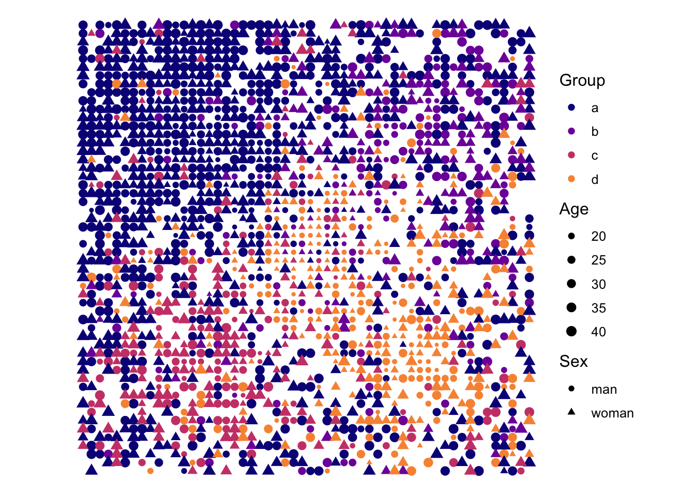
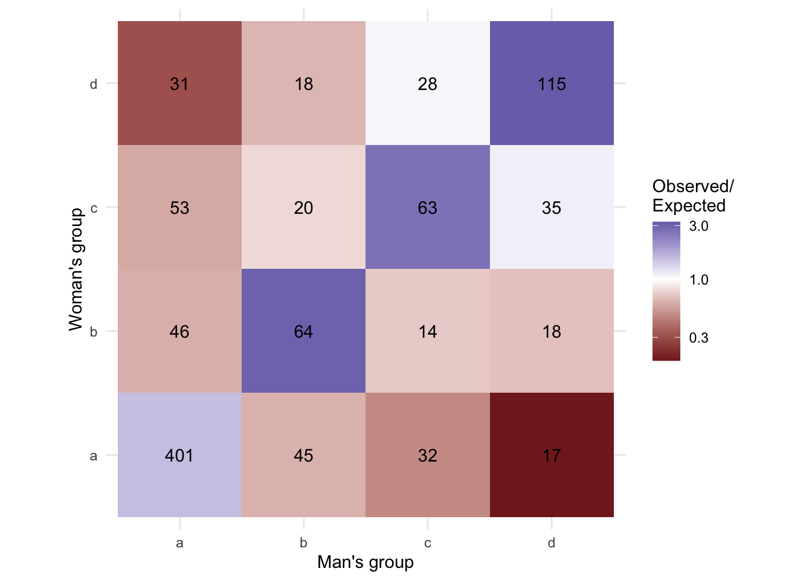
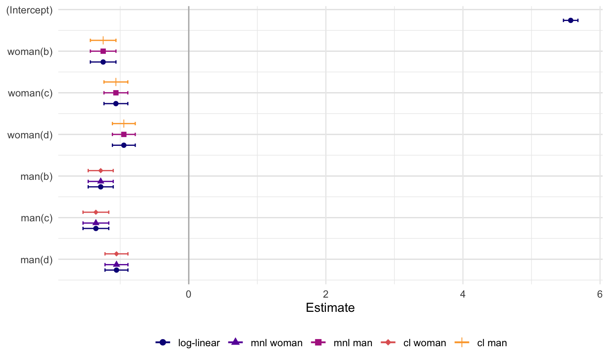
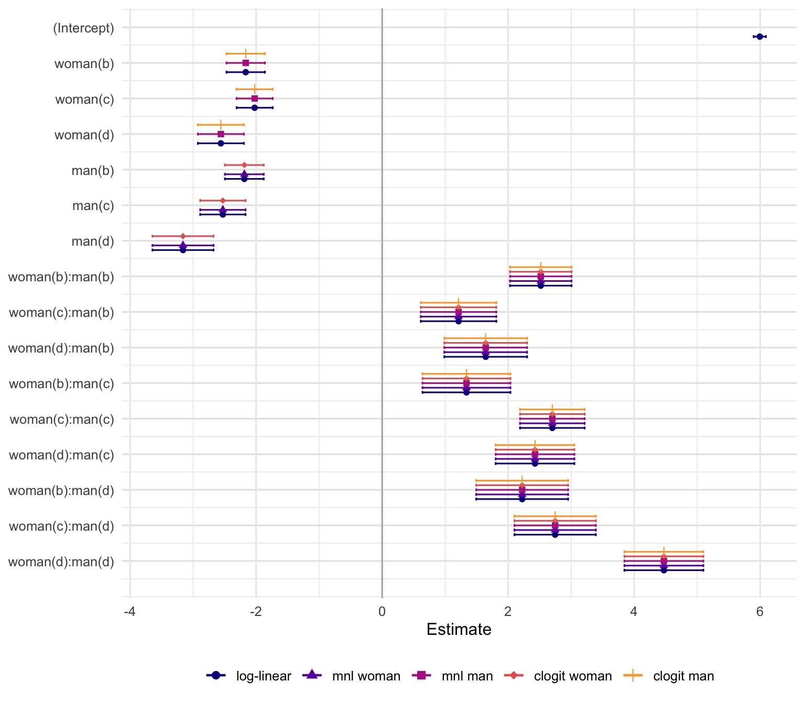

source("simulate_marriage_market.R")
marriage_market <- simulate_marriage_market(
seed = 543,
n = 2000,
groups = tibble(
group = c("a", "b", "c", "d"),
share = c(50, 15, 15, 20),
age_mean = c(35, 30, 30, 25),
age_min = 18,
age_max = 45,
age_concentration = 2
),
location_relax = 1.2,
location_poles = tibble(
pole = c("a", "b", "c", "d", "youth"),
x_pole = c(0.25, 0.75, 0.25, 0.75, 0.5),
y_pole = c(0.75, 0.75, 0.25, 0.25, 0.5)
),
location_params = list(group = -1, youth = -1, noise = 2),
partner_params = list(
same_group = 1,
rank_group = 1,
age_gap = -0.1,
distance = -1,
noise = 2
)
)Discrete Choice Models of Assortative Mating, Part 2: log-linear vs. multinomial vs. conditional logit
matching
conditional logit
multinomial logit
loglinear models
assortative mating
The second note in the series. Here I estimate and compare parameter estimates from conditional logit, multinomial logit, and loglinear models of two-way contingency tables (or data that can be reduced to such a table).
Introduction
This is Part 2 in a series discussing how and why to use conditional logistic regression models for assortative mating research. The goal of this post is to convince you that conditional logistic regression can, at the very least, provide the same answers to questions typically answered using log-linear and multinomial logit models. I do so partly by recapitulating mathematical arguments already covered pretty well by Breen (1994) and Logan (1983). But then I go ahead and beat the proverbial dead horse with my laptop, fitting mathematically equivalent models to simulated data and comparing the parameter estimates. This should, I hope, drive the point home and demonstrate that standard fitting routines will yield estimates of key parameters, and their standard errors, that are the same across the three models. Along the way, I show how to handle what is often the most daunting part of fitting a clogit model: building the correct data structure.
A later post will turn to the specific advantages of the conditional logit. The more limited task here is to show that, for conventional mobility tables, these modeling frameworks can be made to estimate the same underlying association parameters. So the impression from this post will be that fitting a conditional logit model is just a lot of extra work with no real pay-off. The pay-off should be more apparent in the next post.
This post will continue to make use of simulated marriage data. To generate the simulated data, I use a slight modification of a function I developed in the previous post and which can be found here. I use this function to generate matches in a marriage market characterized by four groups, located at four poles distributed around a fictive city. The groups are not only homogamous, but also hierarchically ordered, with the majority group at the top of the hierarchy and minorities at various positions at the bottom of the hierarchy. Those at the top of the hierarchy are preferred as partners relative to those at the bottom of the hierkarchy. There is also an age dimension to mating in the simulated data. Singles are more attracted to others of a similar age, but the groups differ in their age distributions. And younger singles are assumed to be drawn to the center of the city. I load the simulation function and generate singles and matches using the following calls:
Plotting the positions of singles in the market confirms that the spatial allocation of different actors works as expected, with the majority clustered in the upper-right corner of the map and the largest minority in the bottom right corner, but also the middle of the map, due to the unbalanced age distributions and the centralization of youth.
library(ggplot2)
library(stringr)
group_colors <- viridis::plasma(5)[1:4]
ggplot(
marriage_market$singles,
aes(x, y, color = group, shape = sex, size = age)
) +
geom_point() +
coord_equal() +
scale_color_manual(values = group_colors) +
scale_size_continuous(range = c(1, 3)) +
labs(
x = "Spatial coordinate x",
y = "Spatial coordinate y",
color = "Group",
shape = "Sex",
size = "Age"
) +
theme_void(base_size = 12) +
theme(plot.margin = margin(2, 2, 2, 2))
Three models and their mathematical equivalence
Before getting to the laborious—and frankly flagrantly superfluous—exercise of fitting equivalent log-linear, multinomial, and conditional logit models to data and comparing their estimates, it’s worth stating the models in mathematical terms and working through their equivalences.
The standard log-linear model for a two-way table, in this case the cross classification of unions by the woman’s group membership, \(f\), and the man’s group membership, \(m\), is given by the expression:
\[ \log(\mu_{fm}) = \lambda + \alpha_f + \gamma_m + \theta_{fm}. \]
Here, \(\lambda\) represents a grand mean, while \(\alpha_f\) and \(\gamma_m\) capture the relative sizes of the female and male groups, a.k.a., their marginal distributions. These marginal distribution parameters are essentially nuisance parameters, instrumental in generating a plausible null model, but otherwise of little instrinsic interest. Instead, analytical attention is usually focused on the parameters represented by \(\theta_{fm}\). These parameters capture the association between women’s and men’s groups. They represent the deviations of particular cells from an implicit null model of random mating or categorical independence. The social science of mobility table analysis largely centers on what specifications of \(\theta_{fm}\) provide the closest and most parsimonious fit to the data.
This count model can be reworked into a set of conditional probabilities, adopting either the man’s or the woman’s perspective and conditioning on his or her group membership. For example, below I condition on the woman’s group membership: Given a woman belonging to group \(f\), the probability that she will be observed to be in a union with a man of group \(m\) is:
\[ \begin{split} p_{m \mid f} & = \frac{\mu_{fm}}{\sum_\ell \mu_{f\ell}} \\ & = \frac{\exp(\lambda + \alpha_f + \gamma_m + \theta_{fm})} {\sum_\ell \exp(\lambda + \alpha_f + \gamma_\ell + \theta_{f\ell})} \\ & = \frac{\exp(\gamma_m + \theta_{fm})} {\sum_\ell \exp(\gamma_\ell + \theta_{f\ell})}. \end{split} \]
This is the familiar multinomial logit model. A bit of extra math can demonstrate that maximizing a likelihood associated with this model gives the same estimates of \(\gamma_m\) and \(\theta_{fm}\) as the count-data model. However, in the multinomial logit model, the female-group parameter \(\alpha_f\) and the grand mean term, \(\lambda\), disappear because we divide the cell counts by \(\mu_{f+}=\sum_\ell \mu_{f\ell}\). That is, these parameters are conditioned out by construction.
The conditional logit model takes the same idea down to the level of a fully exploded, dyadic data set. Let \(i\) index individual women and \(j\) index individual men. In a conditional logit model, if we assume all women have a non-zero probability of partnering with each man (my assumptions, they are heroic!), the probability that woman \(i\) chooses man \(j\) out of all men, indexed by \(k\) (and including \(j\)) in the denominator is:
\[ P(j|i) = \frac{\exp(V_{ij})}{\sum_k \exp(V_{ik})}, \]
where \(V_{ij}\) is typically a linear-in-parameters function indicating the utility woman \(i\) gets from forming a union with man \(j\). Along the lines of the log-linear model, we can specify utilities that are functions only of women’s and men’s group memberships and corresponding parameters, where \(f(i)\) is the woman’s group and \(m(j)\) is the man’s group:
\[ V_{ij} = \eta_{m(j)} + \delta_{f(i)m(j)}. \]
Here I distinguish the parameters in the conditional logit, \(\eta_m\) and \(\delta_{fm}\), from those estimated in the log-linear and multinomial models. As I will show in a moment, there is actually an direct relationship between these parameters and the previous parameters, but for now I refrain from presuming an equivalence. As with the multinomial model, there are no main effects for the women’s group memberships, nor for a grand mean. These are conditioned out in the probability expression.
To see the relationship between the conditional logit and the multinomial model parameters, I aggregate the individual probabilities to the level of men’s groups. Let \(N_m\) (alternately, \(N_\ell\)) be the number of available men in group \(m\) (or \(\ell\)). To aggregate, I make use of two facts. First, conditional on their own group membership, all women have the same utility function. Second, from a given woman’s perspective, all men in group \(m\) have the same utility. Then, using the law of total probability yields:
\[ \begin{split} P(m \mid f) &= \sum_{m(j)=m} P(j \mid i:f(i)=f) \\ &= \sum_{m(j)=m} \frac{\exp(\eta_{m(j)} + \delta_{f(i)m(j)})} {\sum_k \exp(\eta_{m(k)} + \delta_{f(i)m(k)})} \\ &= \frac{N_m \exp(\eta_m + \delta_{fm})} {\sum_\ell N_\ell \exp(\eta_\ell + \delta_{f\ell})} \\ &= \frac{\exp\left(\log N_m + \eta_m + \delta_{fm}\right)} {\sum_\ell \exp\left(\log N_\ell + \eta_\ell + \delta_{f\ell}\right)}. \end{split} \]
This bears a striking resemblance to the multinomial model previously discussed:
\[ p_{m \mid f} = \frac{\exp(\gamma_m + \theta_{fm})} {\sum_\ell \exp(\gamma_\ell + \theta_{f\ell})}. \]
There is just a slight difference in the parameterization. Specifically, the conditional logit model contains an additional \(\log N_m\) term. We can ask under what conditions these two expressions would be equal, i.e.,
\[ \frac{\exp(\gamma_m + \theta_{fm})} {\sum_\ell \exp(\gamma_\ell + \theta_{f\ell})} = \frac{\exp\left(\log N_m + \eta_m + \delta_{fm}\right)} {\sum_\ell \exp\left(\log N_\ell + \eta_\ell + \delta_{f\ell}\right)} \]
Immediately, it’s apparent that one parameterization that would make these equivalent is:
\[ \gamma_m = \log N_m + \eta_m \quad \text{and} \quad \theta_{fm} = \delta_{fm}. \] Under this paramterization, \(\theta_{fm}\) and \(\delta_{fm}\) would be equivalent right off the bat. But the group-specific intercepts from the two models, \(\gamma_m\) and \(\eta_m\), would differ by \(\log(N_m)\). But a simple reshuffling shows a quick fix:
\[ \eta_m = \gamma_m - \log N_m \]
This means that specifying \(-\log(N_m)\) as an offest when estimating the conditional logit model will lead the group-specific intercepts to match \(\gamma_m\) directly. In other words, in the model:
\[ P(j|i) = \frac{\exp \left(\gamma_{m(j)} + \theta_{f(i)m(j)} - \log N_{m(j)}\right)} {\sum_k \exp\left(\gamma_{m(k)} + \theta_{f(i)m(k)}- \log N_{m(k)}\right)} \]
the parameters \(\gamma_m\) and \(\theta_{fm}\) will be exactly equivalent to their counterparts in the multinomial model, and hence, the log-linear model. Without the offset, the \(\gamma\) parameters will differ, although the \(\theta\) parameters will still match. This math should be sufficient to prove the fundamental equivalence between these three models when they are properly specified. But for the skeptical and the more empirically minded, I demonstrate this computationally below.
Data steps
To numerically demonstrate the equivalence between models, I’m going to fit log-linear models, multinomial models, and conditional logit models to the simulated data set I presented above. The first two models can actually use the same data setup, which is just a contingency table counting the number of unions for each combination of man’s and woman’s group. The conditional logit requires a slightly different setup.
Contingency table for log-linear and multinomial models
Constructing a contingency table of female group by male group matches from the simulated data involves pulling the matches and joining in the group memberships for the men and women, followed by an aggregation to counts:
loglin_data <-
marriage_market$matches |>
left_join(
marriage_market$singles |>
filter(sex == "man") |>
select(id_man = id, group_man = group)
) |>
left_join(
marriage_market$singles |>
filter(sex == "woman") |>
select(id_woman = id, group_woman = group)
) |>
count(group_woman, group_man)The contingency table with the observed counts and the ratio of observed to what would be expected using a model of independence can be visualized as follows:
loglin_data <- loglin_data |>
mutate(men_in_group = sum(n), .by = group_man) |>
mutate(women_in_group = sum(n), .by = group_woman) |>
mutate(expected = men_in_group * women_in_group / sum(n)) |>
mutate(ratio = n / expected)
ggplot(
data = loglin_data,
aes(x = group_man, y = group_woman, fill = ratio, label = n)
) +
geom_tile() +
theme_minimal() +
coord_equal() +
scale_fill_gradient2(
midpoint = 1,
transform = "log10"
) +
geom_text()
The contingency table resulting from the simulated marriage market is clearly structured along group lines, as was specified in the data generating process. Relative to a model of independence, there is overrepresentation on the diagonal, especially in the interior of the table. There is also underrepresentation of unions between members of group a and all out groups, particularly group d.
Matched-pair data for conditional logit modeling
For estimating a conditional logit model, I need a data set that enumerates possible matched pairs (i.e., dyads). For now I use all possible pairs, but a convenient property of the conditional logit allows for downsampling of the unmatched pairs, which speeds up data management and estimation times when there are many individuals in the dataset. But with only 1,000 singles on each side of the market in the simulated data, it remains feasible to work with all possible pairs.
The first step is to cross the lists of men and women. Note that in doing so, I’m bringing all the covariates, not just the group memberships, along for the ride, with some strategic renaming along the way to distinguish the attributes of the man vs. the woman in the dyad:
clogit_data <-
cross_join(
marriage_market$singles |>
filter(sex == "man") |>
select(-sex) |>
rename_with(~ paste0(.x, sep = "_man")),
marriage_market$singles |>
filter(sex == "woman") |>
select(-sex) |>
rename_with(~ paste0(.x, sep = "_woman")),
)
clogit_data# A tibble: 1,000,000 × 10
id_man group_man age_man x_man y_man id_woman group_woman age_woman x_woman
<int> <chr> <dbl> <dbl> <dbl> <int> <chr> <dbl> <dbl>
1 1 a 21.7 0.991 0.546 1001 a 25.9 0.25
2 1 a 21.7 0.991 0.546 1002 a 23.5 0.287
3 1 a 21.7 0.991 0.546 1003 a 44.8 0.0648
4 1 a 21.7 0.991 0.546 1004 a 40.5 0.139
5 1 a 21.7 0.991 0.546 1005 a 43.1 0.583
6 1 a 21.7 0.991 0.546 1006 a 28.8 0.194
7 1 a 21.7 0.991 0.546 1007 a 18.2 0.583
8 1 a 21.7 0.991 0.546 1008 a 42.1 0.731
9 1 a 21.7 0.991 0.546 1009 a 25.4 0.343
10 1 a 21.7 0.991 0.546 1010 a 41.3 0.0648
# ℹ 999,990 more rows
# ℹ 1 more variable: y_woman <dbl>One difference between the clogit and contingency table data setups is the need to construct a binary dependent variable identifying the actually observed pairing. This is accomplished by simply joining up the data about observed matches from the generated marriage market data. I use a left join because I want to preserve all of the information about the unmatched pairs as well. This information is critical for estimating the model. I also calculate the number of available men and women in each group, which is needed for the availability offsets used below.
clogit_data <- clogit_data |>
left_join(marriage_market$matches |> mutate(matched = TRUE)) |>
mutate(
matched = if_else(is.na(matched), FALSE, TRUE)
) |>
mutate(
n_men_g = n_distinct(id_man),
.by = group_man
) |>
mutate(
n_women_g = n_distinct(id_woman),
.by = group_woman
)Models of Independence
With the data prepared, I’m ready to estimate some models. I’ll start with models of independence. The models of independence have slightly different specifications across the log-linear, multinomial, and conditional logit models, but lead to the same predictions. And they capture the same underlying null hypothesis of random partner choice, with no preferences for endogamy or exogamy. In this case, the numbers of unions for each combination of man’s and woman’s group are dictated by their marginal distributions. The main difference between the three modeling frameworks is in how they handle these marginal distributions.
Log-linear model of independence
For log-linear models, differences in marginal distributions are handled by specifying dummy parameters corresponding to row and column labels. I fit this model using poisson regression where group a is treated as the reference category for both the row and column coefficients.
loglin_m1 <- glm(
n ~ group_woman + group_man,
family = poisson,
data = loglin_data
)Multinomial model of independence
In the multinomial models, the marginals for one dimension of the table are handled implicitly based on the number of (weighted) observations, while the marginals for the other dimension of the table are handled using group-specific intercepts. Note that I can run this model “forwards” or “backwards”, i.e., predicting the man’s group membership from the woman’s perspective, or predicting the woman’s group membership from the man’s perspective. Whichever way its run, the intercepts have essentially the same parameter estimates and standard errors as their counterparts in the log-linear model. What’s missing is the intercept for the grand mean and the intercepts for the woman’s group (when run from the woman’s perspective) or the man’s group (when run from the man’s perspective). These are handled implicitly through the weights in the multinomial model.
library(nnet)
multinom_m1a <- multinom(
group_man ~ 1,
weights = n,
data = loglin_data,
trace = FALSE
)
multinom_m1b <- multinom(
group_woman ~ 1,
weights = n,
data = loglin_data,
trace = FALSE
)Conditional logit model of independence
In the conditional logit model, the model of independence technically needs no parameters at all. The marginals are handled entirely by the observed numbers of men and women on each side of the fully ennumerated man-woman dyads that make up the data set. However, we can obtain group-specific intercepts if we fit dummy variables for the men’s or, alternately, the women’s group.
What’s crucial in these models, however, is the specification of a stratifying or grouping variable. This requires adopting either the man’s or the woman’s perspective on the data. If I treat this as a problem of men choosing among a set of single women, then I would stratify by the id of the man. If I view the data from the perspective of women choosing among single men, then I would stratify by the id of the woman.
Note also that the models include \(-\log N_m\) or \(-\log N_f\) as offsets. As shown above, this makes the reported conditional-logit coefficients directly comparable to the \(\gamma\) and \(\theta\) coefficients from the multinomial and log-linear models.
library(survival)
clogit_m1a <- clogit(
matched ~ group_man + offset(-log(n_men_g)) + strata(id_woman),
data = clogit_data
)
clogit_m1b <- clogit(
matched ~ group_woman + offset(-log(n_women_g)) + strata(id_man),
data = clogit_data
)Parameter equivalence
We can compare the parameters by plotting the estimates and confidence intervals from each model. Note: Empty positions in the clusters indicate parameters that are conditioned out or otherwise not estimated in a given model.

The plot shows that comparable parameters, across models, have identical estimates and standard errors. This exercise confirms what the math tells us to expect: the parameters in these models are equivalent to each other.
Predictive equivalence
As it turns out, these models also predict exactly the same contingency tables. We can confirm this by generating the predictions, binding them to the analytic data, and, where necessary, aggregating and pivoting. For the log-linear models with counts as the outcome, this is fairly straightforward. I employ a pivot merely to put the predictions into a familiar contingency table form.
loglin_data |>
bind_cols(pr = predict(loglin_m1, type = 'response')) |>
select(group_man, group_woman, pr) |>
pivot_wider(id_cols = group_woman, names_from = group_man, values_from = pr)# A tibble: 4 × 5
group_woman a b c d
<chr> <dbl> <dbl> <dbl> <dbl>
1 a 263. 72.8 67.8 91.6
2 b 75.4 20.9 19.5 26.3
3 c 90.8 25.1 23.4 31.6
4 d 102. 28.2 26.3 35.5For the multinomial models, aggregation is needed. The predictions take the form not of counts, but of predicted probabilities. In the model I use for prediction below, I treated the observations as representing the women and the outcome as representing the category of the man with whom each woman was paired, with counts acting as weights indicating how many women chose men of the given type. The predictions are a set of probabilities, spread across columns, of partnering with men of the different types. To convert probabilities into counts, I just have to weight by the number of women represented by each row in the original data. No pivot is necessary because multinom in the nnet package spreads predicted probabilities for each category across columns.
loglin_data |>
select(group_woman, n) |>
bind_cols(pr = predict(multinom_m1a, type = "probs") |> as.data.frame()) |>
summarize(across(c(a, b, c, d), ~ sum(n * .x)), .by = group_woman)# A tibble: 4 × 5
group_woman a b c d
<chr> <dbl> <dbl> <dbl> <dbl>
1 a 263. 72.8 67.8 91.6
2 b 75.4 20.9 19.5 26.3
3 c 90.8 25.1 23.4 31.6
4 d 102. 28.2 26.3 35.5For the conditional logit, aggregation is relatively simple. For each woman, we can obtain the predicted probability of forming a union with each man. We obtain the contingency table by summing these predicted probabilities jointly within the male and female groups.
clogit_data |>
bind_cols(pr = predict(clogit_m1a)) |>
mutate(pr = exp(pr) / sum(exp(pr)), .by = id_woman) |>
summarize(pr = sum(pr), .by = c(group_woman, group_man)) |>
pivot_wider(id_cols = group_woman, names_from = group_man, values_from = pr)# A tibble: 4 × 5
group_woman a b c d
<chr> <dbl> <dbl> <dbl> <dbl>
1 a 263. 72.8 67.8 91.6
2 b 75.4 20.9 19.5 26.3
3 c 90.8 25.1 23.4 31.6
4 d 102. 28.2 26.3 35.5Saturated Models
Saturated log-linear model
For a contingency table, the saturated count model specifies, in essence, a dummy variable for each cell in the table, with appropriate constraints to ensure the parameters are all statistically identified. The result is a model that perfectly reproduces all of the counts in the table. A standard way of specifying the saturated model is to include all row and column main effects and interactions as follows:
loglin_mS <- glm(
n ~ group_woman * group_man,
family = poisson,
data = loglin_data
)Saturated multinomial model
Again, the multinomial model predicts a chosen partner’s group membership conditional on the attributes of the “choosing” partner. The choice of whether to treat the man or the woman as the choosing partner is arbitrary and immaterial to the fit of the model. Here I run the model both ways.
multinom_mSa <- multinom(
group_man ~ group_woman,
weights = n,
data = loglin_data,
trace = FALSE
)
multinom_mSb <- multinom(
group_woman ~ group_man,
weights = n,
data = loglin_data,
trace = FALSE
)Saturated conditional logit model
The saturated conditional logit model can be specified as below. Similar to the multinomial model, one must conceptualize the problem from either the man’s or the woman’s perspective, but the model fits will be the same. The group count offsets make the intercept terms commensurable with the \(\alpha\) and/or \(\gamma\) coefficients obtained in the other models.
clogit_mSa <- clogit(
matched ~ group_woman * group_man + offset(-log(n_men_g)) + strata(id_woman),
data = clogit_data
)
clogit_mSb <- clogit(
matched ~ group_woman * group_man + offset(-log(n_women_g)) + strata(id_man),
data = clogit_data
)Comparing parameters between saturated models
I compile the parameter estimates for all the models in the plot below. Once gain, empty positions in the clusters indicate parameters that are not estimated in a given model. Just as with the independence models, the commensurable parameter estimates are identical across models.

Predictive equivalence of the saturated models
My claim is that the saturated models will perfectly reproduce the observed contingency table. We can confirm this through a saturated mode analog of the same prediction exercise used for the independence model:
loglin_data |>
bind_cols(pr = predict(loglin_mS, type = 'response')) |>
select(group_man, group_woman, pr) |>
pivot_wider(id_cols = group_woman, names_from = group_man, values_from = pr)# A tibble: 4 × 5
group_woman a b c d
<chr> <dbl> <dbl> <dbl> <dbl>
1 a 401. 45.0 32.0 17.0
2 b 46.0 64.0 14.0 18.0
3 c 53.0 20.0 63.0 35.0
4 d 31.0 18.0 28.0 115. loglin_data |>
select(group_woman, n) |>
bind_cols(pr = predict(multinom_mSa, type = "probs") |> as.data.frame()) |>
summarize(across(c(a, b, c, d), ~ sum(n * .x)), .by = group_woman)# A tibble: 4 × 5
group_woman a b c d
<chr> <dbl> <dbl> <dbl> <dbl>
1 a 401. 45.0 32.0 17.0
2 b 46.0 64.0 14.0 18.0
3 c 53.0 20.0 63.0 35.0
4 d 31.0 18.0 28.0 115. clogit_data |>
bind_cols(pr = predict(clogit_mSa)) |>
mutate(pr = exp(pr) / sum(exp(pr)), .by = id_woman) |>
summarize(pr = sum(pr), .by = c(group_woman, group_man)) |>
pivot_wider(id_cols = group_woman, names_from = group_man, values_from = pr)# A tibble: 4 × 5
group_woman a b c d
<chr> <dbl> <dbl> <dbl> <dbl>
1 a 401. 45.0 32.0 17.0
2 b 46.0 64.0 14.0 18.0
3 c 53.0 20.0 63.0 35.0
4 d 31.0 18.0 28.0 115. Methodological footnote: Fitting multinomial models directly with clogit
There is an alternative way to fit the multinomial model using clogit without exploding the data into all possible dyads. There’s no real reason to do this if you have nnet, but this further demonstrates the fundamental equivalence between the multinomial logit and the conditional logit. The idea is to represent the potential categories of prospective partners, rather than the individual partners themselves, in separate rows. Again, one must conceptually treat one side of the market (women in the example below) as the “choosers” and the other side as the “chosen”. Then each distinct chooser receives a number of rows equal to the possible categories of the chosen. We then create an outcome, matched, which is TRUE for the appropriate cases. At the same time, a strata variable is needed to distinguish the sets of observations corresponding to a single entry in the contingency table. I construct the data as follows:
multinom_as_clogit <- loglin_data |>
cross_join(tibble(alternative = letters[1:4])) |>
mutate(
matched = group_man == alternative,
strata = interaction(group_woman, group_man),
row = row_number()
) |>
select(row, strata, group_woman, group_man = alternative, matched, n, row)A segment of the resulting data structure is presented below, with strategic shading and highlights. The row highlights separate groups of four wherein the woman’s group is constant, but the man’s group varies. The red highlighted matching row, with the matching variable coded to TRUE, corresponds to the outcome for the cell of the contingency table that is being represented. For the current data, the first group of four rows actually corresponds to a single cell in the original contingency table, namely the cell for the count of women of group a matched to men of group a.
row | strata | group_woman | group_man | matched | n |
|---|---|---|---|---|---|
1 | a.a | a | a | true | 401 |
2 | a.a | a | b | false | 401 |
3 | a.a | a | c | false | 401 |
4 | a.a | a | d | false | 401 |
5 | a.b | a | a | false | 45 |
6 | a.b | a | b | true | 45 |
7 | a.b | a | c | false | 45 |
8 | a.b | a | d | false | 45 |
9 | a.c | a | a | false | 32 |
10 | a.c | a | b | false | 32 |
11 | a.c | a | c | true | 32 |
12 | a.c | a | d | false | 32 |
13 | a.d | a | a | false | 17 |
14 | a.d | a | b | false | 17 |
15 | a.d | a | c | false | 17 |
16 | a.d | a | d | true | 17 |
17 | b.a | b | a | true | 46 |
18 | b.a | b | b | false | 46 |
19 | b.a | b | c | false | 46 |
20 | b.a | b | d | false | 46 |
21 | b.b | b | a | false | 64 |
22 | b.b | b | b | true | 64 |
23 | b.b | b | c | false | 64 |
24 | b.b | b | d | false | 64 |
etc. | |||||
With the data structured in this way, we can estimate the equivalent of the multinomial logit using a conditional logit fitting function. In this case, the outcome is the binary match indicator, the explanatory variables are dummy variables indicating the possible categories of the men, and the strata variable is as constructed.
multinom_m1c <- clogit(
matched ~ group_man + strata(strata),
weights = n,
method = "efron",
data = multinom_as_clogit
)Because the data were constructed from the perspective of women as the “choosers”, the coefficient estimates and that standard errors are equivalent to those in Multinomial Model 1a.
bind_cols(
broom::tidy(multinom_m1a) |>
select(group_man = y.level, mnl.est = estimate, mnl.se = std.error),
broom::tidy(multinom_m1c) |> select(cl.est = estimate, cl.se = std.error)
)# A tibble: 3 × 5
group_man mnl.est mnl.se cl.est cl.se
<chr> <dbl> <dbl> <dbl> <dbl>
1 b -1.28 0.0932 -1.28 0.0932
2 c -1.35 0.0958 -1.35 0.0958
3 d -1.05 0.0854 -1.05 0.0854References
Breen, Richard. 1994. “Individual Level Models for Mobility Tables and Other Cross-Classifications.” Sociological Methods & Research 23 (2): 147–73. https://doi.org/10.1177/0049124194023002001.
Logan, John A. 1983. “A Multivariate Model for Mobility Tables.” American Journal of Sociology 89 (2): 324–49. http://www.jstor.org/stable/2779144.